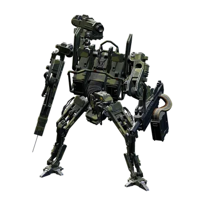

About the game
It is late 1989. You come back from a trip to the islands of the Archipelago and find Östertörn empty: the people are gone, and the towns, farms and forests are patrolled by machines. You scavenge weapons, ammo and gear, find out what happened, and fight back.
- Open world. One big map of 8 regions with 359 named places to explore: villages, farms, churches, bunkers and military bases.
- Machines, not a health bar. Every machine is built from parts and armour plates you can shoot off one by one. Use stealth, the right ammo and traps to take them on.
- Co-op. Play alone or with up to three friends in online co-op.
- Grow stronger. Earn experience for 48 skills, find better weapons, craft ammo and gear from schematics, and build and defend your own bases.
- Story. 63 main missions and many side missions tell what happened to Östertörn; two expansions, Alpine Unrest and FNIX Rising, continue the story.
From the Steam store page
Generation Zero is set in the familiar but hostile open world of Östertörn, Sweden. Your once peaceful home has now been overrun by mysterious, deadly machine enemies. You must choose your battles wisely as you engage in adrenaline-pumping guerilla combat against the mechanical forces.
Explore a Hostile Open World
Explore a huge map inspired by the Swedish Cold War era where danger lurks on every street, in every patch of forest and deep inside every bunker.
Wage Guerilla Warfare
Engage in tense battles against sophisticated and deadly machines. Take them on solo or together with up to three friends. Can you outsmart a relentless enemy designed to hunt you down?
Grow Stronger
Grow stronger as you gain experience fighting back against the machines. Scavenge parts from your fallen enemies and use them to craft equipment, weapons and ammunition. Build and fortify your own bases across the island and start taking back your home!
Uncover the Mystery Behind the Machines
Discover the truth behind what really happened to the region of Östertörn.
Browse the wiki
 41 weapons with damage for every ammo type and quality, 60 ammo types, attachments, 28 augments and every skin.MachinesMCH
41 weapons with damage for every ammo type and quality, 60 ammo types, attachments, 28 augments and every skin.MachinesMCH
Every machine class and its 82 weapon layouts, component hit points, 64 machine weapons, detection ranges and difficulty scaling.WorldMAP 8 regions, 359 locations with mini maps, 104 safehouses, 213 collectibles in 15 sets.MissionsMIS
8 regions, 359 locations with mini maps, 104 safehouses, 213 collectibles in 15 sets.MissionsMIS All 145 main and side missions with briefings and every objective, plus the challenge trees and the titles they award.Items & craftingITM
All 145 main and side missions with briefings and every objective, plus the challenge trees and the titles they award.Items & craftingITM 273 inventory items, materials, all 229 schematics with costs and recipes, and the companion.CharacterCHRAll 48 skills, and 1,483 apparel items, emotes, vehicles and other cosmetics.Interactive mapMAP
273 inventory items, materials, all 229 schematics with costs and recipes, and the companion.CharacterCHRAll 48 skills, and 1,483 apparel items, emotes, vehicles and other cosmetics.Interactive mapMAP All 23 DLC: the Alpine Unrest and FNIX Rising expansions, free updates, and the weapon, equipment, vehicle and cosmetic packs.
All 23 DLC: the Alpine Unrest and FNIX Rising expansions, free updates, and the weapon, equipment, vehicle and cosmetic packs.What's special about this wiki
- Exact damage tables for every weapon: each ammo type's damage, armour and component multipliers, damage falloff and range, worked out for every quality from Dilapidated to Experimental.
- Machine anatomy: the hit points of every component and armour plate on every machine class and weapon layout, and the weapons each layout carries.
- Stealth numbers: how far each machine can see and hear you crouched, prone, standing or running, by day and by night, and how fast it notices you.
- Difficulty and co-op scaling as the game applies it, per difficulty and number of players.
- Which augment fits which weapon at which quality, and how to research each one.
- Every location with its own page and mini map, and the collectibles and loot around it.
Start here
Regions
The map is one continuous world. You start on the islands of the Archipelago and work your way north; Himfjäll comes with Alpine Unrest.